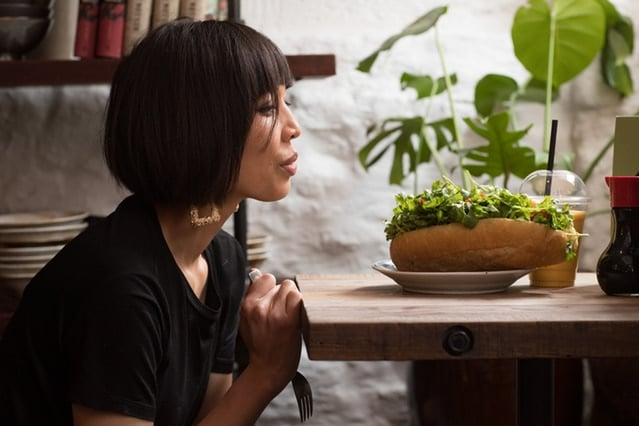
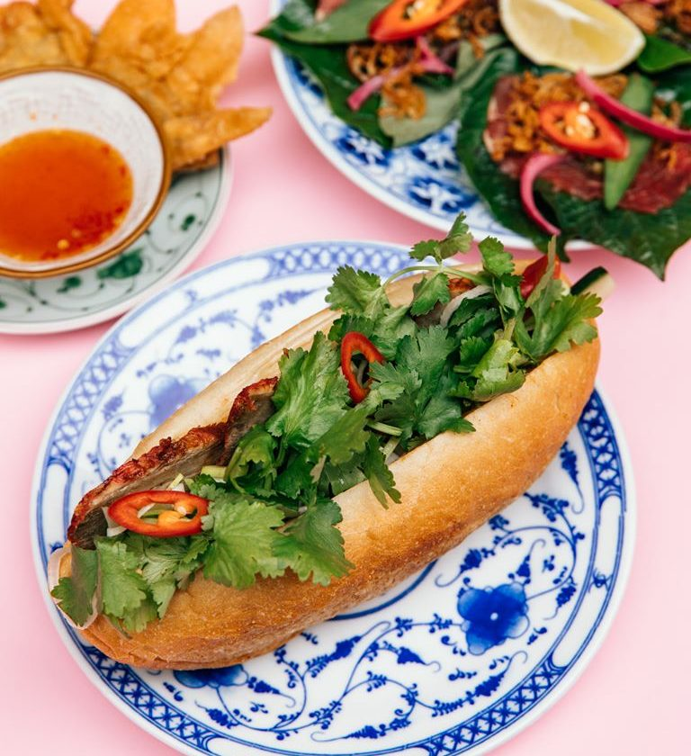
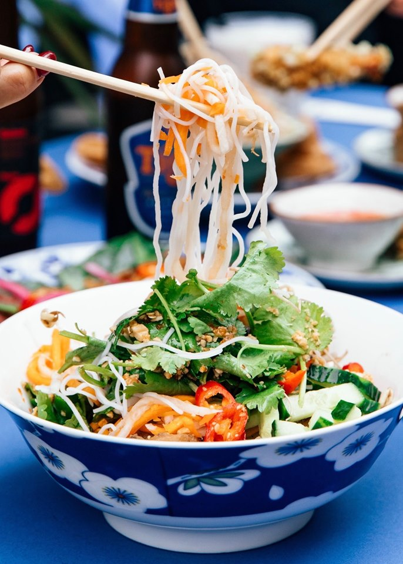

We opened District Tonkin with one goal in mind: giving our guests a unique, delicious, and unforgettable
experience. Our menu reflects centuries of family cooking, offering traditional and innovative dishes,
skillfully cooked to perfection. Every single item we serve is carefully prepared to dazzle your senses, so
browse our site and come by for some authentic
street food.
The best things often occur in the meeting of two worlds. In the unexpected combinations that create
something new. The best of both worlds together to invent new tastes and new experiences. Forging new
traditions and making them your own. In Hanoi, this is something we learned long ago, by combing the French
and Vietnamese kitchens to create the
Banh Mì.

Bahn mi
Crispy, warm Vietnamese sandwiches.
All served with District Tonkin's homemade sauces, pepper mayo, cucumber, leeks, coriander and chili.

Nuddles salads
Warm rice noodles topped with fried shallots, bean sprouts, pickles, cucumber, leeks, coriander, peanuts
and chili.

Pho
Vietnam's national dish on beaf served with slices of rare flank steak, topped with TONKIN's fresh herb
mix, lime and chili.